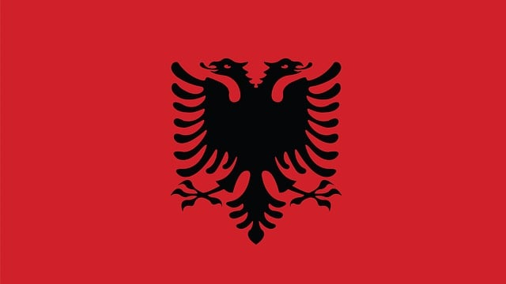

Albania
This article is about the country in Southeastern Europe. For other uses, see Albania (disambiguation). Republic of Albania Republika e Shqipërisë (Albanian) Red flag with a black double-headed eagle in the centre. Flag
- Officially the Republic of Albania (Albanian: Republika e Shqipërisë),
- It is a country in Southeast Europe.
- Several important ancient Greek colonies were also established on the coast.
The country is located in the Balkans on the Adriatic and Ionian Seas within the Mediterranean Sea and shares land borders with Montenegro to the northwest, Kosovo to the northeast, North Macedonia to the east and Greece to the south. Spanning an area of 28,748 km2 (11,100 sq mi), it displays a varied range of climatic, geological, hydrological and morphological conditions. The country's landscapes range from rugged snow-capped mountains in the Albanian Alps and the Korab, Skanderbeg, Pindus and Ceraunian Mountains, to fertile lowland plains extending from the coasts of the Adriatic and Ionian seas. Tirana is the capital and largest city in the country, followed by Durrës, Vlorë, and Shkodër.
In this section you'll find lots of expert advice about helping your child learn English. You can search our hundreds of free online English games, songs, stories and activities here and find more information on our apps for mobile phones and tablets. You can also find out about English courses for your child. As a parent, you may want to improve your own level of English so that you can help and support your child’s learning. We offer a range of flexible and personalised online English courses for adults.
Name
The historical origins of the term "Albania" can be traced back to medieval Latin, with its foundations believed to be associated with the Illyrian tribe of the Albani. This connection gains further support from the work of the Ancient Greek geographer Ptolemy during the 2nd century AD, where he included the settlement of Albanopolis situated to the northeast of Durrës .The presence of a medieval settlement named Albanon or Arbanon hints at the possibility of historical continuity. However, the precise relationship between these historical references and the question of whether Albanopolis was synonymous with Albanon remains a subject of scholarly debate.The Byzantine historian Michael Attaliates, in his 11th century historical account, provides the earliest undisputed reference to the Albanians, when he mentions them having taken part in a revolt against Constantinople in 1079.[16] Additionally, he identified the Arbanitai as subjects under the governance of the Duke of Dyrrachium.[17] In the Middle Ages, Albania was denoted as Arbëri or Arbëni by its inhabitants, who identified themselves as Arbëreshë or Arbëneshë.[18] Albanians employs the terms Shqipëri or Shqipëria when referring to their nation, designations that trace their historical origins to the 14th century.[19] However, it was not until the late 17th and early 18th centuries that these terms gradually superseded Arbëria and Arbëreshë among the Albanians.[19][20] These two expressions are widely interpreted to symbolise "Children of the Eagles" and "Land of the Eagles" .
Prehistory
Mesolithic habitation in Albania has been evidenced in several open air sites which during that
period were close to the Adriatic coastline and in cave sites. Mesolithic objects found in a
cave near Xarrë include flint and jasper objects along with fossilised animal bones, while those
discoveries at Mount Dajt comprise bone and stone tools similar to those of the Aurignacian
culture.[23] The Neolithic era in Albania began around 7000 BCE and is evidenced in finds which
indicate domestication of sheep and goats and small-scale agriculture.
A part of the
Neolithic
population may have been the same as the Mesolithic population of the southern Balkans like in
the Konispol cave where the Mesolithic stratum co-exists with Pre-Pottery Neolithic finds.
Cardium pottery culture appears in coastal Albania and across the Adriatic after 6500 BCE, while
the settlements of the interior took part in the processes which formed Starčevo culture.
The Indo-Europeanization of Albania in the context of the IE-ization of the western Balkans
began after 2800 BCE. The presence of the Early Bronze Age tumuli in the vicinity of later
Apollonia dates to 2679±174 calBCE (2852-2505 calBCE). These burial mounds belong to the
southern expression of the Adriatic-Ljubljana culture (related to later Cetina culture) which
moved southwards along the Adriatic from the northern Balkans. The same community built similar
mounds in Montenegro (Rakića Kuće) and northern Albania (Shtoj).[25] The first archaeogenetic
find related to the IE-ization of Albania involves a man with predominantly Yamnaya ancestry
buried in a tumulus of northeastern Albania which dates to 2663–2472 calBCE.[26] During the
Middle Bronze Age, Cetina culture sites and finds appear in Albania. Cetina culture moved
southwards across the Adriatic from the Cetina valley of Dalmatia. In Albania, Cetina finds are
concentrated around southern Lake Shkodër and appear typically in tumulus cemeteries like in
Shkrel and Shtoj and hillforts like Gajtan (Shkodër) as well as cave sites like Blaz, Nezir and
Keputa (central Albania) and lake basin sites like Sovjan (southeastern Albania)